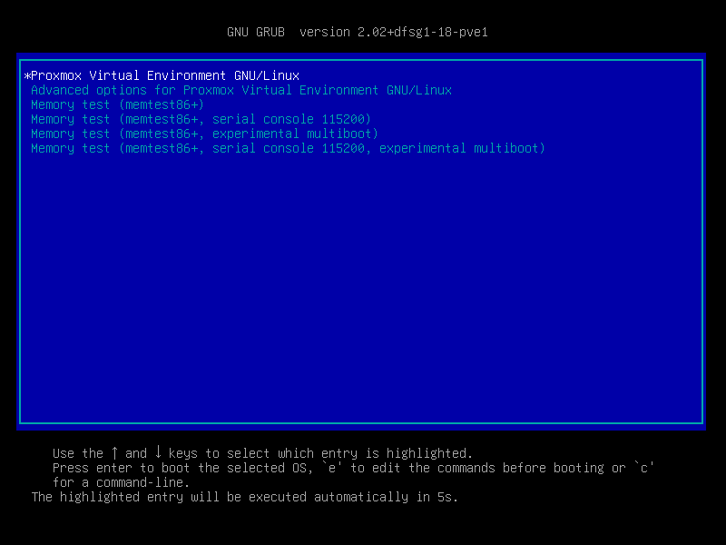
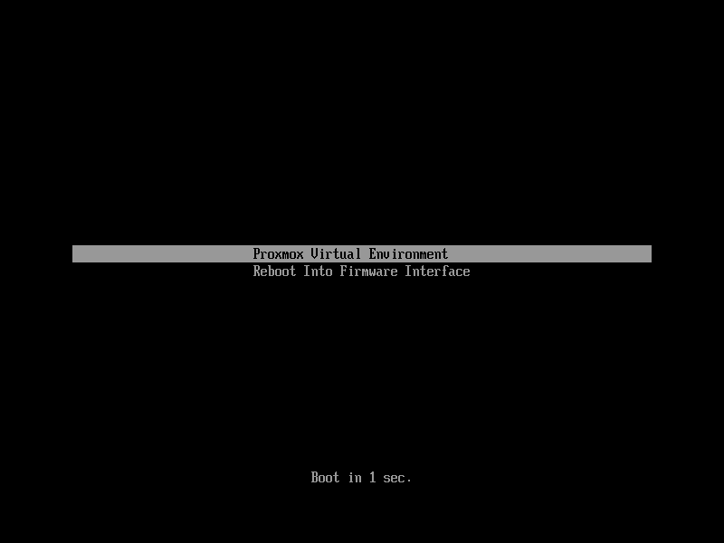

Proxmox VE currently uses one of two bootloaders depending on the disk setup selected in the installer.
For EFI Systems installed with ZFS as the root filesystem systemd-boot is
used, unless Secure Boot is enabled. All other deployments use the standard
GRUB bootloader (this usually also applies to systems which are installed on
top of Debian).
The Proxmox VE installer creates 3 partitions on all disks selected for installation.
The created partitions are:
hdsize parameter or the remaining space
used for the chosen storage type
Systems using ZFS as root filesystem are booted with a kernel and initrd image
stored on the 512 MB EFI System Partition. For legacy BIOS systems, and EFI
systems with Secure Boot enabled, GRUB is used, for EFI systems without
Secure Boot, systemd-boot is used. Both are installed and configured to point
to the ESPs.
GRUB in BIOS mode (--target i386-pc) is installed onto the BIOS Boot
Partition of all selected disks on all systems booted with GRUB
[8].
proxmox-boot-tool is a utility used to keep the contents of the EFI System
Partitions properly configured and synchronized. It copies certain kernel
versions to all ESPs and configures the respective bootloader to boot from
the vfat formatted ESPs. In the context of ZFS as root filesystem this means
that you can use all optional features on your root pool instead of the subset
which is also present in the ZFS implementation in GRUB or having to create a
separate small boot-pool [9].
In setups with redundancy all disks are partitioned with an ESP, by the installer. This ensures the system boots even if the first boot device fails or if the BIOS can only boot from a particular disk.
The ESPs are not kept mounted during regular operation. This helps to prevent
filesystem corruption to the vfat formatted ESPs in case of a system crash,
and removes the need to manually adapt /etc/fstab in case the primary boot
device fails.
proxmox-boot-tool handles the following tasks:
You can view the currently configured ESPs and their state by running:
# proxmox-boot-tool status
Setting up a new partition for use as synced ESP. To format and initialize a partition as synced ESP, e.g., after replacing a
failed vdev in an rpool, or when converting an existing system that pre-dates
the sync mechanism, proxmox-boot-tool from proxmox-kernel-helper can be used.
the format command will format the <partition>, make sure to pass
in the right device/partition!
For example, to format an empty partition /dev/sda2 as ESP, run the following:
# proxmox-boot-tool format /dev/sda2
To setup an existing, unmounted ESP located on /dev/sda2 for inclusion in
Proxmox VE’s kernel update synchronization mechanism, use the following:
# proxmox-boot-tool init /dev/sda2
or
# proxmox-boot-tool init /dev/sda2 grub
to force initialization with GRUB instead of systemd-boot, for example for
Secure Boot support.
Afterwards /etc/kernel/proxmox-boot-uuids should contain a new line with the
UUID of the newly added partition. The init command will also automatically
trigger a refresh of all configured ESPs.
Updating the configuration on all ESPs. To copy and configure all bootable kernels and keep all ESPs listed in
/etc/kernel/proxmox-boot-uuids in sync you just need to run:
# proxmox-boot-tool refresh
(The equivalent to running update-grub systems with ext4 or xfs on root).
This is necessary should you make changes to the kernel commandline, or want to sync all kernels and initrds.
Both update-initramfs and apt (when necessary) will automatically
trigger a refresh.
Kernel Versions considered by proxmox-boot-tool. The following kernel versions are configured by default:
Manually keeping a kernel bootable. Should you wish to add a certain kernel and initrd image to the list of
bootable kernels use proxmox-boot-tool kernel add.
For example run the following to add the kernel with ABI version 5.0.15-1-pve
to the list of kernels to keep installed and synced to all ESPs:
# proxmox-boot-tool kernel add 5.0.15-1-pve
proxmox-boot-tool kernel list will list all kernel versions currently selected
for booting:
# proxmox-boot-tool kernel list Manually selected kernels: 5.0.15-1-pve Automatically selected kernels: 5.0.12-1-pve 4.15.18-18-pve
Run proxmox-boot-tool kernel remove to remove a kernel from the list of
manually selected kernels, for example:
# proxmox-boot-tool kernel remove 5.0.15-1-pve
It’s required to run proxmox-boot-tool refresh to update all EFI System
Partitions (ESPs) after a manual kernel addition or removal from above.

The simplest and most reliable way to determine which bootloader is used, is to watch the boot process of the Proxmox VE node.
You will either see the blue box of GRUB or the simple black on white
systemd-boot.

Determining the bootloader from a running system might not be 100% accurate. The safest way is to run the following command:
# efibootmgr -v
If it returns a message that EFI variables are not supported, GRUB is used in BIOS/Legacy mode.
If the output contains a line that looks similar to the following, GRUB is used in UEFI mode.
Boot0005* proxmox [...] File(\EFI\proxmox\grubx64.efi)
If the output contains a line similar to the following, systemd-boot is used.
Boot0006* Linux Boot Manager [...] File(\EFI\systemd\systemd-bootx64.efi)
By running:
# proxmox-boot-tool status
you can find out if proxmox-boot-tool is configured, which is a good
indication of how the system is booted.
GRUB has been the de-facto standard for booting Linux systems for many years and is quite well documented [10].
Changes to the GRUB configuration are done via the defaults file
/etc/default/grub or config snippets in /etc/default/grub.d. To regenerate
the configuration file after a change to the configuration run:
[11]
# update-grub
systemd-boot is a lightweight EFI bootloader. It reads the kernel and initrd
images directly from the EFI Service Partition (ESP) where it is installed.
The main advantage of directly loading the kernel from the ESP is that it does
not need to reimplement the drivers for accessing the storage. In Proxmox VE
proxmox-boot-tool is used to keep the
configuration on the ESPs synchronized.
systemd-boot is configured via the file loader/loader.conf in the root
directory of an EFI System Partition (ESP). See the loader.conf(5) manpage
for details.
Each bootloader entry is placed in a file of its own in the directory
loader/entries/
An example entry.conf looks like this (/ refers to the root of the ESP):
title Proxmox version 5.0.15-1-pve options root=ZFS=rpool/ROOT/pve-1 boot=zfs linux /EFI/proxmox/5.0.15-1-pve/vmlinuz-5.0.15-1-pve initrd /EFI/proxmox/5.0.15-1-pve/initrd.img-5.0.15-1-pve
You can modify the kernel commandline in the following places, depending on the bootloader used:
GRUB. The kernel commandline needs to be placed in the variable
GRUB_CMDLINE_LINUX_DEFAULT in the file /etc/default/grub. Running
update-grub appends its content to all linux entries in
/boot/grub/grub.cfg.
Systemd-boot. The kernel commandline needs to be placed as one line in /etc/kernel/cmdline.
To apply your changes, run proxmox-boot-tool refresh, which sets it as the
option line for all config files in loader/entries/proxmox-*.conf.
A complete list of kernel parameters can be found at https://www.kernel.org/doc/html/v<YOUR-KERNEL-VERSION>/admin-guide/kernel-parameters.html. replace <YOUR-KERNEL-VERSION> with the major.minor version, for example, for kernels based on version 6.5 the URL would be: https://www.kernel.org/doc/html/v6.5/admin-guide/kernel-parameters.html
You can find your kernel version by checking the web interface (Node → Summary), or by running
# uname -r
Use the first two numbers at the front of the output.
To select a kernel that is not currently the default kernel, you can either:
proxmox-boot-tool to pin the system to a kernel version either
once or permanently (until pin is reset).
This should help you work around incompatibilities between a newer kernel version and the hardware.
Such a pin should be removed as soon as possible so that all current security patches of the latest kernel are also applied to the system.
For example: To permanently select the version 5.15.30-1-pve for booting you
would run:
# proxmox-boot-tool kernel pin 5.15.30-1-pve
The pinning functionality works for all Proxmox VE systems, not only those using
proxmox-boot-tool to synchronize the contents of the ESPs, if your system
does not use proxmox-boot-tool for synchronizing you can also skip the
proxmox-boot-tool refresh call in the end.
You can also set a kernel version to be booted on the next system boot only.
This is for example useful to test if an updated kernel has resolved an issue,
which caused you to pin a version in the first place:
# proxmox-boot-tool kernel pin 5.15.30-1-pve --next-boot
To remove any pinned version configuration use the unpin subcommand:
# proxmox-boot-tool kernel unpin
While unpin has a --next-boot option as well, it is used to clear a pinned
version set with --next-boot. As that happens already automatically on boot,
invoking it manually is of little use.
After setting, or clearing pinned versions you also need to synchronize the
content and configuration on the ESPs by running the refresh subcommand.
You will be prompted to automatically do for proxmox-boot-tool managed
systems if you call the tool interactively.
# proxmox-boot-tool refresh
Since Proxmox VE 8.1, Secure Boot is supported out of the box via signed packages
and integration in proxmox-boot-tool.
The following packages are required for secure boot to work. You can install them all at once by using the ‘proxmox-secure-boot-support’ meta-package.
shim-signed (shim bootloader signed by Microsoft)
shim-helpers-amd64-signed (fallback bootloader and MOKManager, signed by
Proxmox)
grub-efi-amd64-signed (GRUB EFI bootloader, signed by Proxmox)
proxmox-kernel-6.X.Y-Z-pve-signed (Kernel image, signed by Proxmox)
Only GRUB is supported as bootloader out of the box, since other bootloader are currently not eligible for secure boot code-signing.
Any new installation of Proxmox VE will automatically have all of the above packages included.
More details about how Secure Boot works, and how to customize the setup, are available in our wiki.
This can lead to an unbootable installation in some cases if not done correctly. Reinstalling the host will setup Secure Boot automatically if available, without any extra interactions. Make sure you have a working and well-tested backup of your Proxmox VE host!
An existing UEFI installation can be switched over to Secure Boot if desired, without having to reinstall Proxmox VE from scratch.
First, ensure all your system is up-to-date. Next, install
proxmox-secure-boot-support. GRUB automatically creates the needed EFI boot
entry for booting via the default shim.
systemd-boot. If systemd-boot is used as a bootloader (see
Determine which Bootloader is used),
some additional setup is needed. This is only the case if Proxmox VE was installed
with ZFS-on-root.
To check the latter, run:
# findmnt /
If the host is indeed using ZFS as root filesystem, the FSTYPE column
should contain zfs:
TARGET SOURCE FSTYPE OPTIONS / rpool/ROOT/pve-1 zfs rw,relatime,xattr,noacl,casesensitive
Next, a suitable potential ESP (EFI system partition) must be found. This can be
done using the lsblk command as following:
# lsblk -o +FSTYPE
The output should look something like this:
NAME MAJ:MIN RM SIZE RO TYPE MOUNTPOINTS FSTYPE sda 8:0 0 32G 0 disk ├─sda1 8:1 0 1007K 0 part ├─sda2 8:2 0 512M 0 part vfat └─sda3 8:3 0 31.5G 0 part zfs_member sdb 8:16 0 32G 0 disk ├─sdb1 8:17 0 1007K 0 part ├─sdb2 8:18 0 512M 0 part vfat └─sdb3 8:19 0 31.5G 0 part zfs_member
In this case, the partitions sda2 and sdb2 are the targets. They can be
identified by the their size of 512M and their FSTYPE being vfat, in this
case on a ZFS RAID-1 installation.
These partitions must be properly set up for booting through GRUB using
proxmox-boot-tool. This command (using sda2 as an example) must be run
separately for each individual ESP:
# proxmox-boot-tool init /dev/sda2 grub
Afterwards, you can sanity-check the setup by running the following command:
# efibootmgr -v
This list should contain an entry looking similar to this:
[..] Boot0009* proxmox HD(2,GPT,..,0x800,0x100000)/File(\EFI\proxmox\shimx64.efi) [..]
The old systemd-boot bootloader will be kept, but GRUB will be
preferred. This way, if booting using GRUB in Secure Boot mode does not work for
any reason, the system can still be booted using systemd-boot with Secure Boot
turned off.
Now the host can be rebooted and Secure Boot enabled in the UEFI firmware setup utility.
On reboot, a new entry named proxmox should be selectable in the UEFI firmware
boot menu, which boots using the pre-signed EFI shim.
If, for any reason, no proxmox entry can be found in the UEFI boot menu, you
can try adding it manually (if supported by the firmware), by adding the file
\EFI\proxmox\shimx64.efi as a custom boot entry.
Some UEFI firmwares are known to drop the proxmox boot option on reboot.
This can happen if the proxmox boot entry is pointing to a GRUB installation
on a disk, where the disk itself is not a boot option. If possible, try adding
the disk as a boot option in the UEFI firmware setup utility and run
proxmox-boot-tool again.
To enroll custom keys, see the accompanying Secure Boot wiki page.
On systems with Secure Boot enabled, the kernel will refuse to load modules which are not signed by a trusted key. The default set of modules shipped with the kernel packages is signed with an ephemeral key embedded in the kernel image which is trusted by that specific version of the kernel image.
In order to load other modules, such as those built with DKMS or manually, they
need to be signed with a key trusted by the Secure Boot stack. The easiest way
to achieve this is to enroll them as Machine Owner Key (MOK) with mokutil.
The dkms tool will automatically generate a keypair and certificate in
/var/lib/dkms/mok.key and /var/lib/dkms/mok.pub and use it for signing
the kernel modules it builds and installs.
You can view the certificate contents with
# openssl x509 -in /var/lib/dkms/mok.pub -noout -text
and enroll it on your system using the following command:
# mokutil --import /var/lib/dkms/mok.pub input password: input password again:
The mokutil command will ask for a (temporary) password twice, this password
needs to be entered one more time in the next step of the process! Rebooting
the system should automatically boot into the MOKManager EFI binary, which
allows you to verify the key/certificate and confirm the enrollment using the
password selected when starting the enrollment using mokutil. Afterwards, the
kernel should allow loading modules built with DKMS (which are signed with the
enrolled MOK). The MOK can also be used to sign custom EFI binaries and
kernel images if desired.
The same procedure can also be used for custom/third-party modules not managed with DKMS, but the key/certificate generation and signing steps need to be done manually in that case.
[8] These are all installs with root on ext4 or xfs and installs
with root on ZFS on non-EFI systems
[9] Booting ZFS on root with GRUB https://openzfs.github.io/openzfs-docs/Getting%20Started/Debian/Debian%20Bookworm%20Root%20on%20ZFS.html
[11] Systems using proxmox-boot-tool will call proxmox-boot-tool
refresh upon update-grub.